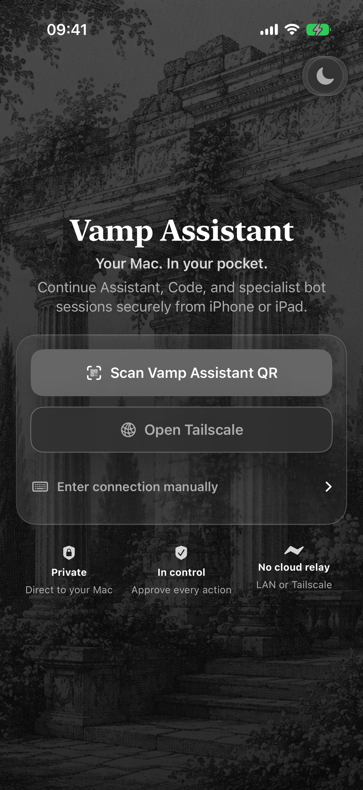

Install Vamp Sync
On the Mac you want to reach. Allow Screen Recording for video and Accessibility for keyboard and pointer control.
Get SyncUse a Mac app from another Mac, iPhone, or iPad. Install Vamp Sync on the Mac you want to reach, then choose one client for your other device.
Open source · private LAN or Tailscale · peer-approved.
One Mac host. Choose the client that fits your screen.
Sync stays on the Mac. Control or Stream goes on the device you use to reach it.
On the Mac you want to reach. Allow Screen Recording for video and Accessibility for keyboard and pointer control.
Get SyncUse Control on Mac, iPhone, or iPad. Choose Stream for a focused app window on iPhone or iPad. You only need one.
Compare belowUse the same trusted LAN or private Tailscale network. Scan Sync’s QR, verify the complete device fingerprint on both devices, approve on the Mac, and choose an app window.
Sync setup detailsBoth connect to Sync and control a selected Mac app window. Choose by the device and experience you prefer.
Choose Control when you connect from another Mac, or want the Control interface on your iPhone or iPad.
Get Control →Choose Stream when you want a focused view of one Mac app on your iPhone or iPad, with touch and keyboard input.
Start with Sync, then download your chosen client. These are the latest published builds for each app and platform.
Install on the Mac you want to reach. macOS 13 or later.
2.3.0 · build 54
Install on the other Mac. macOS 13 or later.
2.3.0 · build 49
The Control client for your phone or tablet. Unsigned IPA; re-sign before installing.
2.3.0 · build 47
The focused mobile client. Unsigned IPA; re-sign before installing.
0.1.6 · build 20
Mac downloads are direct builds and may need “Open Anyway” in System Settings on first launch. iOS downloads need AltStore-style re-signing with your own Apple ID.
Assistant is a separate app for AI work. Your Sync + Control or Stream setup is already complete.
Chat with local models or your own AI provider, work on code, and use specialist tools on your Mac. Its own iOS and browser companions let you continue those sessions remotely. Assistant does not require Sync.
Explore Assistant →